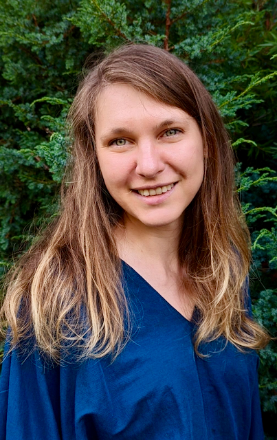

I am an associate professor in
School of Computing and Information Systems at The University of Melbourne that I joined in 2020.
Prior to that I spent 6 years at
Microsoft Research in Cambridge, UK, where I was a principal researcher
leading work on Confidential AI and I/O side-channel mitigation.
Between 2014 and 2016, I was the Microsoft Fellow at Darwin College in Cambridge University.
I received Sc.M. and Ph.D. from Brown University (supervised by Roberto Tamassia), and B.CS. (Hons) from The University of Melbourne (research project supervised by Peter Stuckey). During my PhD I did internships at
IBM Research Zurich with Christian Cachin,
Microsoft Research Redmond with Seny Kamara and Google (x2).
My Erdős number is 3 (times 3 from Claire Mathieu, Michael Mitzenmacher and Eli Upfal). I was a finalist in AI in Cyber Security category of Women in AI Asia-Pacific Awards in 2023.
My research interests include security, privacy and integrity of machine learning algorithms, data analysis tools, multi-party computation
and systems relying on cloud storage, computation and hardware. The goal is to identify and prevent potential vulnerabilities
and to design and build efficient solutions with provable guarantees.
I also enjoy working on
algorithms, data structures and theory.
I received research awards from Facebook, Oracle, held research contracts with The Australian Bureau of Statistics, National Australia Bank. I was a visiting researcher at Microsoft Research in 2022-23. Currently I am a PI on a joint MURI-AUSMURI project on Cybersecurity Assurance for Teams of Computers and Humans (CATCH).
Google Scholar
•
Publications
Email: oohrimenko a t unimelb dоt edu dоt au
My research interests are broadly in privacy, integrity and security of data analysis, machine learning and systems relying on cloud computing and secure hardware, including (click to expand):
At Microsoft Research I was part of Confidential Computing group when our group contributed to:
Publications
Algorithms and Complexity in 2021, 2022, 2023, 2024
Security Analytics in 2023, 2024
Computer Systems in 2020, 2021, 2022
Supervising a team of UoM students "Unimelb Peekaboo"
in the NeurIPS Hide-and-seek privacy challenge: Generating synthetic data
using DP GAN (code), 2020
Demystifying cryptography, Hands On Engineering and IT, UoM 2020
Excellence in First-Time Teaching and Learning Award from CIS/UoM in 2020
If you are interested in pursuing a Ph.D., a Master's or an undergraduate advanced studies project in security, privacy, data structures or algorithms, please contact me directly.
Graduate researchers:
- Pengbo Yan, PhD, co-supervision with Toby Murray, Thuan Pham and Rob Sison. Started in 2021.
- Jacey Ligthart-Smith, MPhil, co-supervision with Tony Wirth. Started in 2021.
- Calvin Huang, PhD, co-supervision with Neil Marchant and Ben Rubinstein. Started in 2021.
- Jiankai Jin, PhD, co-supervision with Ben Rubinstein. Started in 2021.
Postdoctoral researchers:
- Zheguang Zhao. Started in 2023.
Alumni:
- Tian Hui, Masters, co-supervision with Farhad Farokhi. Graduated in 2023. Now Research Assistant at UoM.
- Qiongkai Xu, postdoctoral researcher. Now Lecturer at Macquarie University.
- Hao Wu, PhD, co-supervision with Tony Wirth. Graduated in 2023. Now Postdoctoral Researcher at University of Copenhagen, Denmark.
- William Holland, PhD, co-supervision with Tony Wirth and Justin Zobel. Graduated in 2022. Now at Data61/CSIRO.
- Michelle Chen, Masters. Graduated in 2021. Now at Google.
- Ge Yao, PhD, co-supervision with Udaya Parampalli. Graduated in 2020.
Interns at Microsoft Research:
I was also lucky to work with many bright students at Microsoft:
- Dongge Han (Oxford University), 2019
- Wanrong Zhang (Georgia Institute of Technology, now at Harvard), 2019
- Sajin Sasy (University of Waterloo), 2019
- Jamie Hayes (University College London, now at Google DeepMind), 2018
- Kartik Nayak (The University Of Maryland, now at Duke University), 2017
- Lawrence Esswood (Cambridge University), 2016
- Daniel Gruss (Graz University of Technology, now at the Graz University of Technology), 2016
- Sameer Wagh (Princeton University, now at RISELab at Berkeley), 2016
- Esha Ghosh (Brown University, now at Microsoft Research), 2015
- Aastha Mehta (MPI-SWS, now at University of British Columbia), 2014
- Divya Sharma (Carnegie Mellon University, now at Google), 2014
At The University of Melbourne:
(Selected) Invited talks, advisory committees and reports
- Plenary speaker at Sydney Privacy Workshop, 2024
- Speaker at Computer Science Research Week, National University of Singapore, 2024
- CIS-CAIDE Submission in response to the Supporting responsible AI: discussion paper. Submitted to the Department of Industry, Science and Resources on 7/2023
- CIS Submission in response to the 2023-2030 Australian Cyber Security Strategy Discussion Paper. Submitted to the Department of Home Affairs on 4/2023
- CIS Submission in response to the Privacy Act Review Report. Submitted to the Attorney-General's Department on 3/2023
- Keynote talk at Workshop on Verifiable Database Systems, co-located with ACM SIGMOD, 2023
- Reviewer for U.S. PETs Prize Challenge hosted by NIST and NSF, 2022-23
- Dagstuhl seminar on Privacy in Speech and Language Technology (report), 2022
- Invited talks at Cambridge University, Alan Turing Institute, Data61, Meta and ANU on "Implementation Considerations for Differential Privacy", 2022
- Invited talks at Microsoft Research Redmond and UC Irvine on "Leakage and Protection of Dataset Properties", 2022
- Plenary speaker at AMSI–AustMS Workshop on Bridging Maths and Computer Science, June 2022
- Invited talk at Symposium on Data Access and Privacy, The Australian Bureau of Statistics, December 2021.
- Advisory Member, Methodology Advisory Committee, The Australian Bureau of Statistics, 2021
- On the panel on "Privacy-preserving Machine Learning" at Microsoft Research Summit, October 2021. (video)
- Contributed to the report on Privacy Enhancing Technologies by the Royal Society.
- Invited talk at CSAIL Security Seminar MIT on "Leakage in natural language processing", 2021
- Invited talk at Facebook on "Leakage and Protection of Dataset Properties", 2020
- Secure hardware for privacy-enhanced computation, UK Royal Society, 2019
- Update on Confidential Computing, RSA, 2019
-
Sailing across the Side channel towards Confidential Computing, Real World Crypto, 2018
-
17 for ’17: Microsoft researchers on what to expect in 2017 and 2027
Co-organized workshops
Program committees
Reviewer for ICLR 2022, ICLR 2021, NeurIPS 2021, ICML 2020, AAAI 2020, NeurIPS 2020, ICML 2019, NeurIPS 2018.